Research Hub/The season on YouTube so far: 106 days/Premier League
YouTube Football Tracker · Premier League 2026/27
How the 20 clubs and the league channel publish, who gets watched and who goes quiet, then the season's biggest videos and what they have in common, read chart by chart.
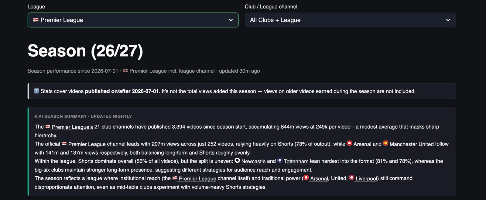
The official Premier League channel has set the pace on YouTube this season, with 292.4 million views from 350 videos, a 68% lead over Arsenal at 174.3 million, and it got there on Shorts, which make up 253 of those 350 uploads and bring in 250.9 million of the views, 86% of everything the channel has collected since July.
Arsenal, Manchester United and Liverpool sit within 24 million of each other, at 174.3, 155.8 and 150.5 million, and they got there three different ways, with Arsenal taking 71% of its views from Shorts, United taking half of its views from long-form and Liverpool somewhere in between. United publishes more than anybody, 497 videos in three and a half months, and turns that volume into 313.6 thousand views per video against 468.5 thousand for Arsenal from 125 fewer uploads, so publishing more on its own does not buy reach. Below the top five the league splits into clubs that publish Shorts in volume, Newcastle and Tottenham above all, and clubs that have barely started.
This is the summary the tracker writes for itself every night, with the numbers corrected to the table, and part one of this piece takes the dashboard apart one chart at a time, to show what sits under those sentences, and part two looks at the biggest individual videos of the season.
Scope: videos published on or after 1 July 2026 on the 20 Premier League club channels plus the official league channel, 4,287 videos over 106 days, snapshot of 15 October 2026. Views on older videos earned during the season are not counted.
YouTube Football Tracker
The YouTube Football Tracker follows more than 100 club and league channels across the top five European leagues, plus the road to the World Cup 2026, with daily recaps, season trends and all-time leaderboards, updated every night. If you run YouTube for a club or a league, it is the quickest way to see what your rivals publish, when and in which format, and which of their videos actually travel, so you can learn from them before you plan your own. If you are a sports journalist, it shows you which stories, clubs and formats work on YouTube this week, with the numbers to back the piece. Open the tracker and start with your own league, and if you want a deeper read for your club or your newsroom, message me on LinkedIn.
Explore the YouTube Football TrackerYou can find me on LinkedIn, read my LinkedIn newsletter or find me on Substack.
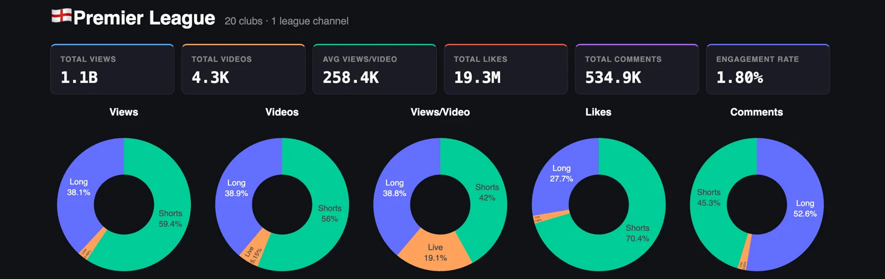
Since 1 July the 21 channels have published about 4,300 videos and collected 1.1 billion views, 19.3 million likes and 534.9 thousand comments, which works out at 258.4 thousand views per video and an engagement rate of 1.80%. For scale, the Serie A channels collected 308.6 million views in the same window from about the same number of videos, so a Premier League upload is worth three and a half times a Serie A upload before anyone has thought about what to put in it.
The donuts tell the same story as in Italy, with sharper edges. Shorts are 56% of what the channels publish and they bring in 59.4% of the views and 70.4% of the likes, and long-form, at 38.9% of output, carries 52.6% of the comments. People tap a heart on a Short and they write something under a long video, and that holds in England as it holds in Italy. Live is around 5% of uploads and 2.5% of total views, but in the views-per-video donut it takes 19.1%, so a Premier League live stream pulls an audience when a club bothers to run one.
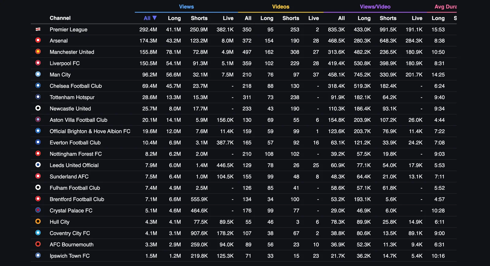
The league channel sits on top with 292.4 million views from 350 videos, and 250.9 million of those come from 253 Shorts that average 991.5 thousand views each, so the official channel has built its season on vertical video that gets close to a million views a time. Arsenal is second with 174.3 million from 372 videos, Manchester United third with 155.8 million from 497, more than anyone else has published, and Liverpool fourth with 150.5 million from 359, so the three biggest clubs are separated by 24 million views and 138 videos.
Manchester City in fifth, at 96.2 million, is the line I would look at twice, because its 76 long-form videos average 745.2 thousand views each, the best long-form average in the league, and its 37 live streams are the most of any channel. After Chelsea at 69.4 million the table drops to Tottenham at 28.6 million and Newcastle at 25.7 million, both built on Shorts, and at the bottom Ipswich has 1.5 million views from 71 videos, and Brentford has 100 Shorts that average 5.6 thousand views each.
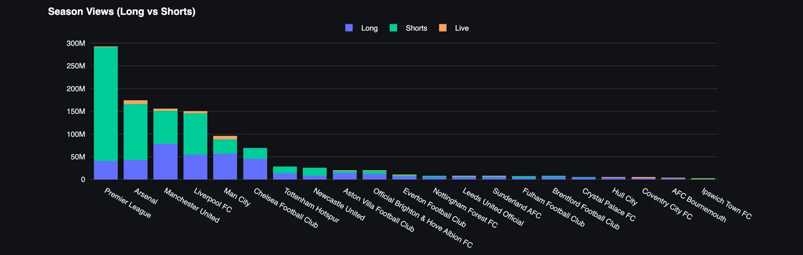
Five channels are above 90 million and everybody else is below 70 million. The league channel, Arsenal, United, Liverpool and City add up to about 869 million views, 79% of the 1.1 billion total, and with Chelsea the top six hold 85%, so the other 15 clubs share what is left.
The league channel takes 250.9 million of its 292.4 million views from Shorts, 86% of the total, and its Shorts win on a per-video basis by a wide margin, averaging 991.5 thousand views against 433.0 thousand for its 95 long-form videos. This is the opposite of what the Serie A channel does, where long-form carries 80% of the views, and it says the two leagues have made different decisions about what the official channel is for.
Arsenal gets 71% of its views from Shorts, with 190 of its 372 videos in that format, and those Shorts average 648.3 thousand views against 280.3 thousand for its long-form. Its 28 live streams average 284.3 thousand, a shade more than its long-form videos, so for Arsenal the vertical feed is the reach engine and everything else is the smaller business.
Manchester United is the mirror image. Long-form brings 78.1 million of its 155.8 million views, half the total, from 162 videos that average 482.2 thousand, twice its Shorts at 236.5 thousand, and United makes 308 Shorts anyway, more than any other channel. The club has an audience for long-form that most of the league would envy and spends most of its output on the format that earns it less per upload.
Liverpool sits between the two, with 61% of its views from 229 Shorts averaging 398.9 thousand and 102 long-form videos averaging 530.8 thousand, so like United its long-form earns more per video than its Shorts, and like Arsenal it publishes Shorts in volume. City in fifth is the long-form channel of the top five, with 56.6 million of its 96.2 million views, 59%, from 76 long-form videos averaging 745.2 thousand, and its 37 live streams averaging 201.7 thousand.
Chelsea in sixth takes the City approach further, with 45.7 million of its 69.4 million views from 88 long-form videos averaging 519.3 thousand, nearly three times its Shorts at 182.4 thousand, and no live streams at all in the window. Tottenham and Newcastle in seventh and eighth are the Shorts channels the nightly summary points at, with 238 of Tottenham's 311 videos and 190 of Newcastle's 233 in that format, and both earn under 100 thousand views per Short, so volume in the vertical feed on its own puts a club in the middle of this table and no higher.
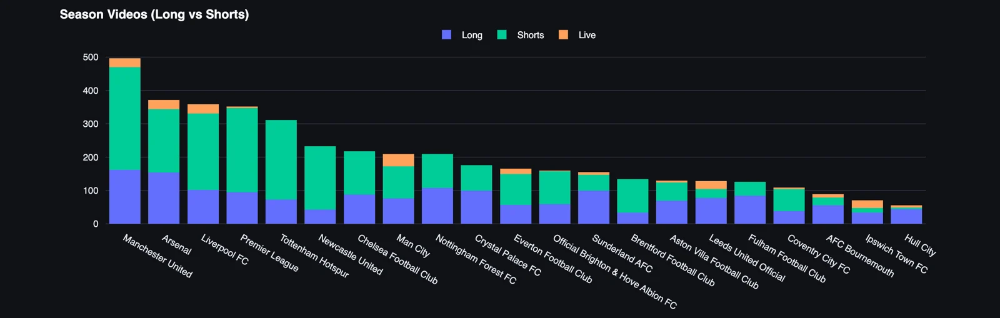
United leads on volume with 497 videos, 308 of them Shorts, ahead of Arsenal at 372, Liverpool at 359, the league channel at 350 and Tottenham at 311, and below that the link between how much a club publishes and how much it gets watched is weak. Nottingham Forest has published 210 videos, the same as City, for 8.2 million views against City's 96.2 million, and Crystal Palace has published 176 videos for 5.1 million, fewer views than Hull City gets from 55.
Hull City, at 55 videos, Ipswich, at 71, and Bournemouth, at 89, are the least active channels, which for Hull means roughly one video every two days across the season so far, and Hull has put three Shorts on YouTube since July. Ipswich has run 23 live streams among its 71 uploads, a third of its output, for an average of 5.4 thousand views each, which is the lowest live average in the league.
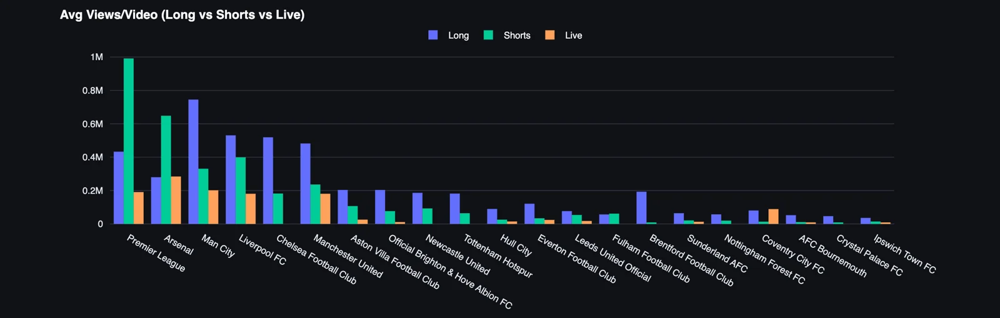
Views per video puts the volume race in context. The league channel averages 835.3 thousand views per video and United 313.6 thousand, so United publishes 42% more and gets well under half the views per upload, and Arsenal at 468.5 thousand earns half as much again per video as United from 125 fewer uploads, with its Shorts averaging 648.3 thousand against 236.5 thousand for United Shorts.
The split by format tells each club where its audience is, and the Brentford line is the one I would print out and pin on a wall. Brentford's 34 long-form videos average 193.1 thousand views, its 100 Shorts average 5.6 thousand, and the club has published three Shorts for every long-form video. Crystal Palace has the same shape, with 99 long-form videos averaging 46.9 thousand and 77 Shorts averaging 6.0 thousand, and Everton's long-form at 121.2 thousand earns three and a half times its Shorts at 33.9 thousand. Coventry has run two live streams averaging 89.1 thousand, more than its long-form at 80.6 thousand. In each case the club has found the format that works for it and makes very little of it, which is the cheapest growth available anywhere in this dashboard.
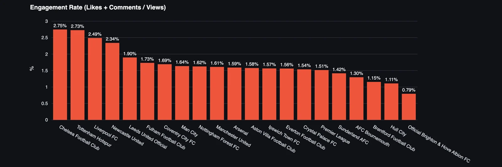
The ranking turns over. Chelsea leads at 2.75%, then Tottenham at 2.73%, Liverpool at 2.49% and Newcastle at 2.34%, and after Leeds at 1.90% most of the league sits in a narrow band between 1.73% and 1.30%. Arsenal, second on views, is at 1.59%, the league channel is at 1.51%, which is what I would expect from a channel nobody supports, and United at 1.61% and City at 1.64% are in the same band. Brighton is last at 0.79%, less than a third of Chelsea's rate, and Hull City and Brentford are just above it at 1.11% and 1.15%.
Chelsea takes 66% of its views from long-form and Tottenham puts 77% of its uploads into Shorts, so the format alone does not explain it, and my reading is that Chelsea and Tottenham have audiences that treat the club channel as a place to react, while Arsenal's 648.3 thousand views per Short bring in neutrals who scroll past. The league rate of 1.80% is below the 2.07% Serie A manages, and Juventus, Inter and Milan all sit above 2%, so bigger reach in England comes with fewer reactions per view.
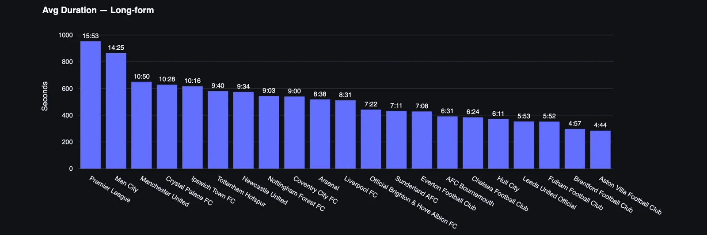
The league channel makes the longest long-form videos, at 15:53 on average, followed by City at 14:25, United at 10:50, Crystal Palace at 10:28 and Ipswich at 10:16. At the bottom Aston Villa averages 4:44, Brentford 4:57, Fulham 5:52 and Leeds 5:53, which is highlight length published in the long-form slot.
City is second here and first on long-form views per video at 745.2 thousand, and the league channel, longest of all at 15:53, is fifth on long-form views per video at 433.0 thousand, behind Liverpool, Chelsea and United, which all average between 8:31 and 10:50, so length on its own does not buy the long-form audience and City earns its 14 minutes with what it puts in them. Read this next to the length of Shorts and the Arsenal approach becomes clear, because the club with the best Shorts average among the clubs also makes the shortest Shorts in the league.
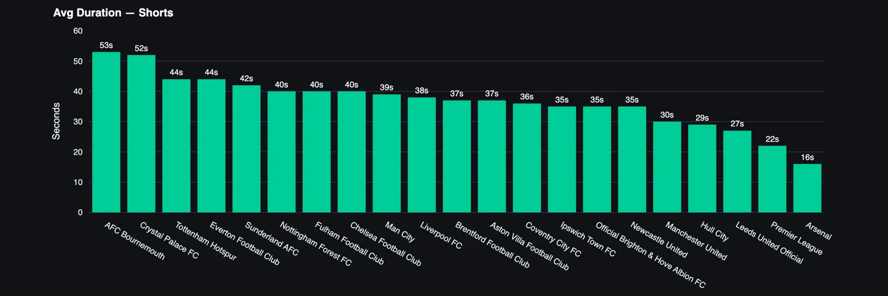
Bournemouth's Shorts average 53 seconds, Crystal Palace's 52, Tottenham's and Everton's 44 and Sunderland's 42, and then much of the league sits between 35 and 40 seconds. At the short end Arsenal is at 16 seconds, the league channel at 22, Leeds at 27, Hull at 29 and United at 30.
The two channels with the shortest Shorts have the two best Shorts averages in the league, 991.5 thousand for the league channel and 648.3 thousand for Arsenal, and the two with the longest Shorts, Bournemouth and Palace, average 11.3 thousand and 6.0 thousand per Short. That is one chart and it proves nothing on its own, but if I ran a club channel whose Shorts run close to a minute and earn under 10 thousand views, this is the first thing I would test.
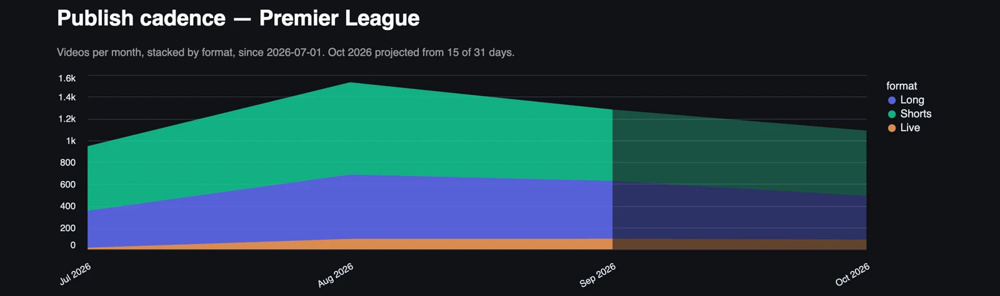
Output grew from roughly 950 videos in July to about 1,550 in August, the busiest month of the season so far, and fell back to about 1,350 in September, with long-form steady at around 650 a month from August on and Shorts doing most of the moving. October is projected at around 1,100, below September, and the projection is built on 15 of 31 days that include an international break, so treat it as an early read.
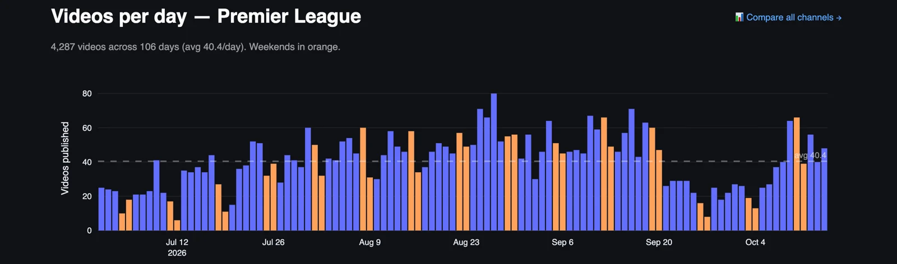
Early July runs at 10 to 25 videos a day, which is pre-season, tours and kit launches, and the daily count climbs through late July and August to the busiest stretch in the last week of August, with the peak day near 80 videos. September holds above the average for most of the month, and then the fortnight from 21 September to 3 October drops to between 10 and 30 a day, the slowest stretch since early July, which I would want to explain before I read anything into it.
Weekends are not automatically the busiest days, and plenty of weekdays outpublish the weekend around them, because signings, press conferences and match content land on different days. For a club the useful number is the average, 40.4 Premier League videos a day, which is how much other Premier League content every upload competes with for the attention of the same fans.
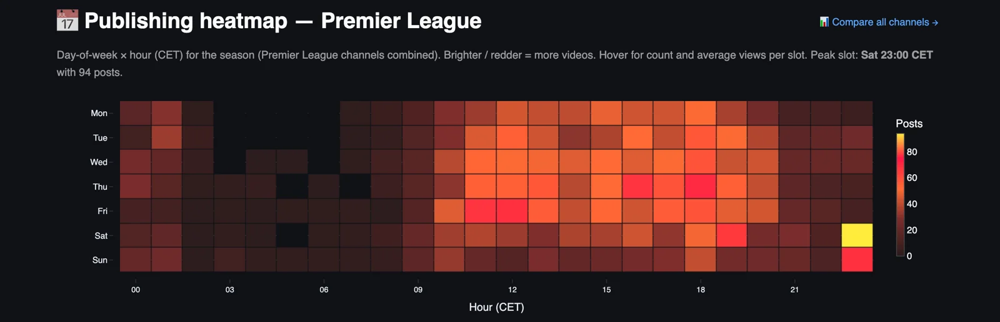
The peak slot is Saturday at 23:00 CET, with 94 posts, and Sunday at 23:00 CET is the second brightest cell on the page, so the busiest hour of the week for Premier League channels is the hour after the evening kick-off finishes, when full-time highlights go up. The working day from 09:00 to 20:00 is busy from Monday to Friday, with Thursday and Friday around 11:00 and 17:00 to 18:00 the strongest weekday slots, and the night is close to empty.
Serie A's busiest hour is Monday lunchtime, which is the weekend recap, and the Premier League's is Saturday night, which is the match itself, and that difference says a lot about how quickly the two leagues get match content out. It also means Saturday at 23:00 CET is the hour everyone else is publishing, so a club with a smaller audience could try the emptier slots and see whether it gets more of the feed.
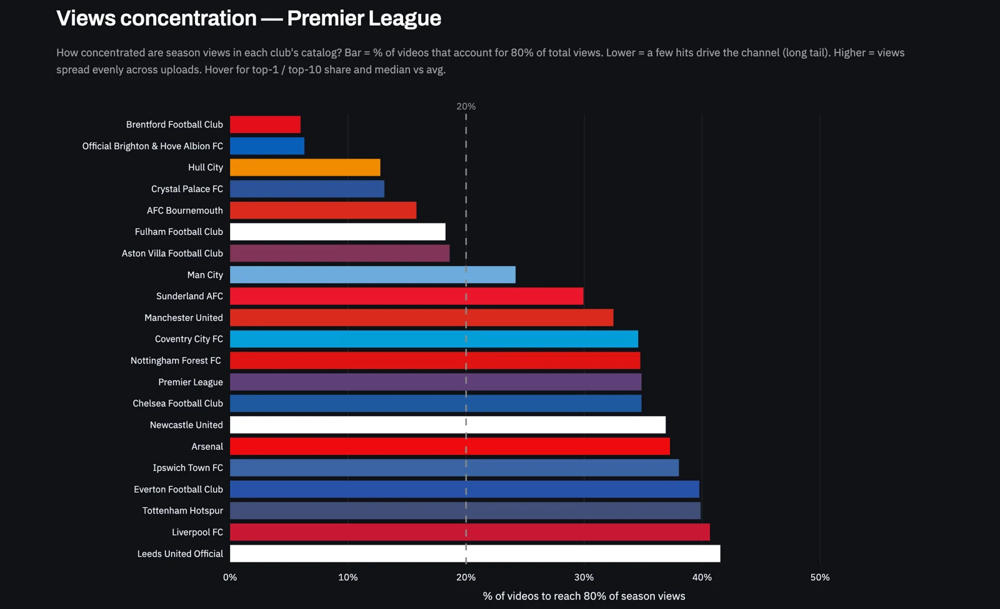
About 35% of the videos produce 80% of the views across the Premier League this season, well above the 20% of a textbook Pareto split and above the figure Serie A sits at. The views are spread more evenly across the catalogue than in Italy, which fits a league where the top five channels each average over 300 thousand views per video, so the middle of the catalogue is doing more of the work.
In the tracker the same chart works per club, so a club can see whether it lives on a handful of viral videos or spreads its views evenly, and those are two very different editorial problems.
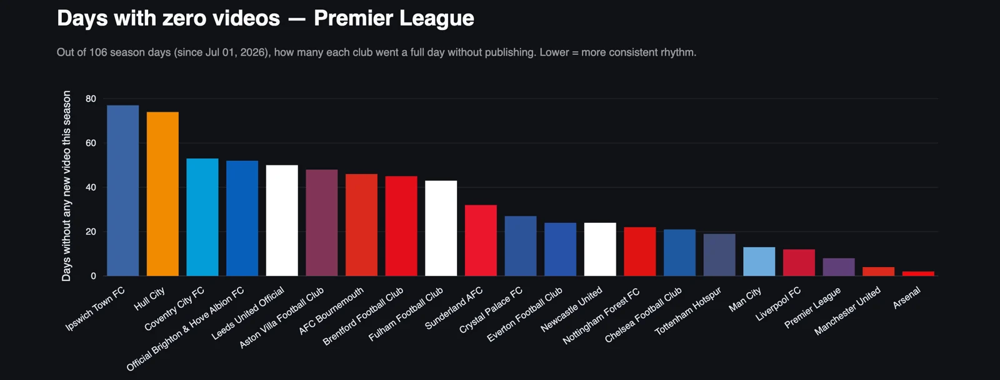
Arsenal has missed about two days, United about four, the league channel about eight, and Liverpool and City around 12 and 13, so the five channels at the top of the views table are the five that have missed the fewest days. At the other end Ipswich and Hull City each went more than 70 days of the 106 without publishing, which means they are silent on two days out of three, and Coventry, Brighton and Leeds each missed around 50.
Brighton in that group is the surprise of the dashboard, a club tenth on views with 19.6 million and last on engagement, going quiet on half the days of the season. Consistency is the cheapest thing on this page to fix, and in the Premier League the five most consistent channels are the five biggest, with nothing in between.
Part two
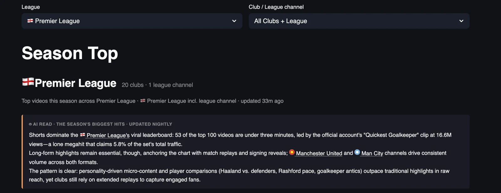
Part one looked at channels, and part two looks at videos, the 100 most-watched Premier League uploads since 1 July, which add up to 335.0 million views, 3.3 million per video on average, at an average age of 47 days. Goalkeepers own the top of the list, starting with a thirteen-second league channel Short of the quickest goalkeeper in the Premier League, the most-watched video of the season with 17.0 million views, then Alisson copying Pickford at 8.4 million and a third goalkeeper Short, Stop That, Alisson, at 7.1 million, all three from the league channel.
The clubs that compete with the league in this list are City, with 15 of the 100 videos, Arsenal with 12, United with 10 and Liverpool with 9, and they do it with highlights as much as with Shorts, because United's 10:26 highlights of a friendly against Atletico Madrid sit fourth with 7.2 million views and Chelsea's 6-3 Carabao Cup win over Leeds sits sixth with 6.7 million. Shorts lead the top 100 by ten points, 54% to 44%, and the most-watched video holds 5.1% of the top 100 views, so the season has one clear monster at the top and a long run of big matches and player moments behind it.
For a club social team this is the list to learn from, and for a journalist it is the closest thing to a record of what Premier League fans chose to watch, like and argue about this autumn.
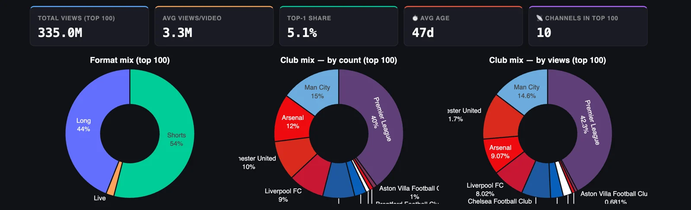
Ten channels place a video in the top 100, and five of them take almost all of it. The league channel has 40% of the videos and 42.3% of the views, City has 15% of the videos and 14.6% of the views, United has 10% of the videos and around 12% of the views, Arsenal 12% and 9.07%, and Liverpool 9% and 8.02%, so those five hold 86 of the 100 videos. Chelsea, Newcastle, Brighton, Aston Villa and Brentford share the rest, with Villa and Brentford on one video each.
Eleven clubs have no video in the top 100, and Tottenham, seventh on season views with 28.6 million from 311 videos, is one of them, which is what a channel built on 64.2 thousand views per Short looks like against a list where the hundredth video needs millions. Arsenal, second on views for the season, is fourth here on views and third on count, so the Arsenal season is a long run of big Shorts and the top of this list belongs to City and the league.
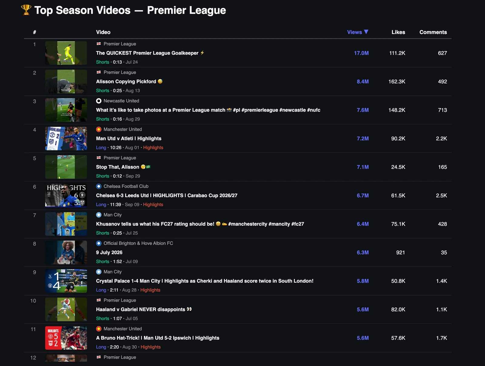
Seven of the top eleven are Shorts, and the four league channel entries are all about players rather than matches, with the quickest goalkeeper at 17.0 million, Alisson copying Pickford at 8.4 million, Stop That, Alisson at 7.1 million and Haaland against Gabriel at 5.6 million, three of them goalkeeper clips under 26 seconds. The quickest goalkeeper went out on 24 July, before a ball had been kicked in the league, and it is still first by a margin of 8.6 million, so a good Short keeps travelling for months.
The clubs get in with both formats. Newcastle's third place is a sixteen-second Short of what it is like to take photos at a Premier League match, 7.6 million views for a clip about the club photographer, and City's seventh place is Khusanov on what his FC27 rating should be, 6.4 million for a player talking about a video game. The long-form entries are match highlights, United against Atletico Madrid on 1 August at 7.2 million, Chelsea 6-3 Leeds in the Carabao Cup at 6.7 million, Crystal Palace 1-4 City at 5.8 million and a Bruno Fernandes hat-trick in United 5-2 Ipswich at 5.6 million, between 2:11 and 11:39 long.
Brighton's entry in eighth is the odd one out, a 1:52 Short titled with its publish date, 9 July 2026, with 6.3 million views, 921 likes and 35 comments, which is a like rate of 0.01% on a list where the next lowest Short, Stop That, Alisson, is at 0.35% and the rest run between 1.2% and 2%. That is the kind of line that pays for the tracker, because it points at a video whose views come from somewhere other than Brighton fans, and I would want to know where before I copied anything about it.
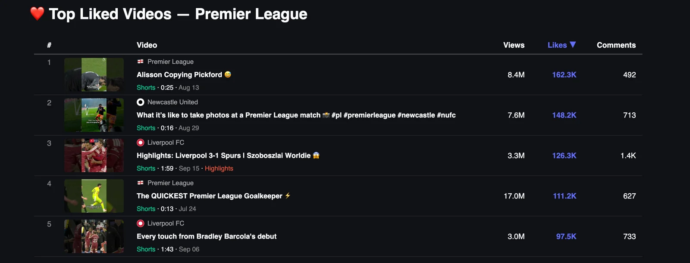
The most-liked video of the season is the league channel Short of Alisson copying Pickford, with 162.3 thousand likes from 8.4 million views, a like rate of 1.9%, and Newcastle's photographer Short is second with 148.2 thousand likes at 1.95%. The two Liverpool entries are the ones that stand out, because the 1:59 Short of the 3-1 win over Spurs with Szoboszlai's goal has 126.3 thousand likes from 3.3 million views, a rate of 3.8%, nearly six times the 0.65% of the quickest goalkeeper, and every touch from Bradley Barcola's debut has 97.5 thousand from 3.0 million, 3.25%.
Likes go to faces and first moments, a debut, a goal, a goalkeeper doing something ridiculous, and the club versions of those videos get a higher rate than the league versions, because a Liverpool fan watching Barcola's first touches on the Liverpool channel is there to react.
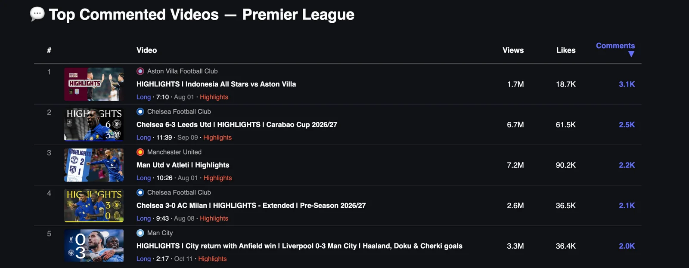
All five are long-form highlights, and the one at the top is a pre-season friendly. Aston Villa's highlights of Indonesia All Stars against Villa on 1 August drew 3.1 thousand comments from 1.7 million views, one for every 548 views, six times the rate of United's Atletico Madrid highlights in third, which drew 2.2 thousand from 7.2 million, one for every 3,273. Chelsea's 6-3 win over Leeds is second with 2.5 thousand, Chelsea's 3-0 pre-season win over Milan is fourth with 2.1 thousand from 2.6 million views, and City's 3-0 win at Anfield on 11 October closes the five with 2.0 thousand.
A friendly in Indonesia and a win at Anfield produce the most conversation on this list, and for a journalist this is the most useful list in the tracker, because it points straight at the stories fans want to talk about, and in Villa's case at an audience in Southeast Asia that the club channel reached with one upload.
The Premier League on YouTube is five big channels, a sixth close behind, and fifteen clubs that between them hold 15% of the views, and the gap is mostly about rhythm and format, because the five channels that publish almost every day own the reach, and the clubs that go dark for half the season are invisible on the platform whatever the size of their ground. I spent three years on the digital side of London 2012, and the appetite of a British audience for video surprised me then and it surprises me again at 1.1 billion views in 106 days.
Engagement is where Chelsea, Tottenham and Newcastle beat the channels above them, and that is the asset I would build on if I ran one of the smaller clubs, with a daily rhythm first, a hard look at which format earns per video second, because Brentford, Palace and Everton are all making the most of the format that pays them least, and the Saturday 23:00 CET rush avoided on purpose. Nobody at the bottom of the zero-days chart needs a bigger budget to fix the first of those.
The hit list in part two says what that daily rhythm should carry, with the league owning the goalkeeper and player clips that travel everywhere, and the clubs winning with highlights, debuts, a photographer's day at work and a defender talking about his video game rating, and only the highlights need match footage.
YouTube Football Tracker
Clubs and leagues can use it to benchmark their channel against every rival and borrow what is working elsewhere, across all five big leagues. Journalists can use it to find what is breaking out on football YouTube, which club is suddenly growing and which format is taking over, with the numbers to back the story. Everything in this piece is live at ytft.aguywithascarf.com, and if you want a custom view for the clubs or leagues you follow, message me on LinkedIn.
Explore the YouTube Football TrackerYou can find me on LinkedIn, read my LinkedIn newsletter or find me on Substack.